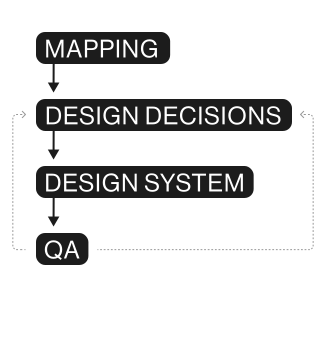
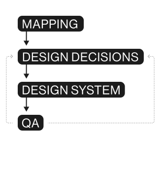

2.5 Brands, 3 Websites,
10 Weeks One System

Following a previous collaboration with the client, we were invited to take on a significantly more ambitious challenge:
Build and launch three websites - including two full brand creations - in under 10 weeks.
Each website served a different purpose and a different audience:
- Amel an existing brand needing a structured uplift and a new website.
- Mossadad a new brand and website built from scratch.
- Dario a consumer-facing product requiring its own brand identity and a website with a more complex product flow.
The core question was:
How do you build multiple brands and multiple websites in parallel without sacrificing quality or coherence?

Development-First, System-Driven Thinking
From day one, we understood that the only way to achieve this scale and speed was to treat the three websites as a system, not as three separate projects.
Our methodology was built on three pillars:
- Development-First Planning
- Reuse components and structures
- Accelerate decisions
- Shorten the time between design and development handoff
- High-Intensity Collaboration & Weekly Decisions
- Lean Branding for Speed & Clarity
- Rapid research into audience, product value, and category
- A compact exploration phase
- Visual foundations aligned to the shared wireframe system
Before designing anything, we defined a shared wireframe architecture for all three websites. This allowed us to:
This system-first approach meant that every design decision was rooted in feasibility - enabling speed.
The compressed timeline required weekly decision cycles with the client.
No long iterations
No “we'll decide next week.
”No endless explorations.
This worked because the relationship was built on trust from previous collaboration - a crucial requirement for a process this fast and this agile.
For Mossadad and Dario we ran a lean, focused branding process, designed to create usable guidelines quickly:
The result:
Two full brand identities developed in record time, tightly connected to the website structure they would live in.


Process as Proof
Instead of treating the design system as an afterthought, we used it as the foundation of the entire rebrand rollout.
Every finalized design decision - from typography and color tokens to interactive elements and page templates - went straight into the design system inside Figma. That system then became the bridge between design and development, allowing us to:
- Move approved visual patterns directly into coded components
- Ensure brand consistency across 1,000+ pages
- Minimize back-and-forth and accelerate delivery
- Keep design and engineering fully aligned as the brand evolved
By the end of the process, we had proven that a Design System for a marketing website can be not only a design framework - but an operational engine that powers brand transformation in real time.


Shipping While Building
The heart of this project was the methodology itself: we didn’t wait for the brand to be complete before starting.
While AppsFlyer’s internal teams were still refining brand principles, our designers and developers were already applying them - component by component, page by page. Every new decision was validated in production and immediately scaled through the system.
How it worked:
- Brand exploration and visual definition by AppsFlyer’s teams ran in parallel to Kido’s web implementation efforts
- Each approved decision was integrated into the design system
- Figma libraries served as the single synchronization layer between design and dev
- Development continuously shipped new pages using the latest to
The process allowed us to maintain both agility and alignment, reducing redundant work while creating a more stable, scalable product. Over time, the system began to accelerate itself: fewer new components were needed, while existing ones evolved seamlessly through the system
 

The Result
After months of continuous collaboration, AppsFlyer’s new marketing site went live - stronger, faster, and fully systemized. It doesn’t just look different - it works differently. It’s scalable by design.
Results at a glance:
24
Redesigned core pages
165+
Design System components
1000+
Supported pages updated to reflect the new brand
270+
UI screens designed and implemented
What Stays After the Launch?
A symphony of efficiency, not a waste of motion
The Founder, FilmNation Entertainment, 2016
Most brand reposition processes struggle because they rely on static guidelines and slow handoffs. This project proved another path - one where methodology becomes a competitive advantage.
AppsFlyer didn’t pause their brand’s repositioning;
they evolved while in motion
By running branding, design system, and development simultaneously, they created an infrastructure built for scale.
At Kido, we believe that modern brands are no longer made of pages and pixels - they’re made of systems and decisions.
And when all engines are on, brand growth becomes unstoppable.
Next Case Studies

Amdocs
One Library to Rule Them All

Peerspot
The Buying Intelligence Platform